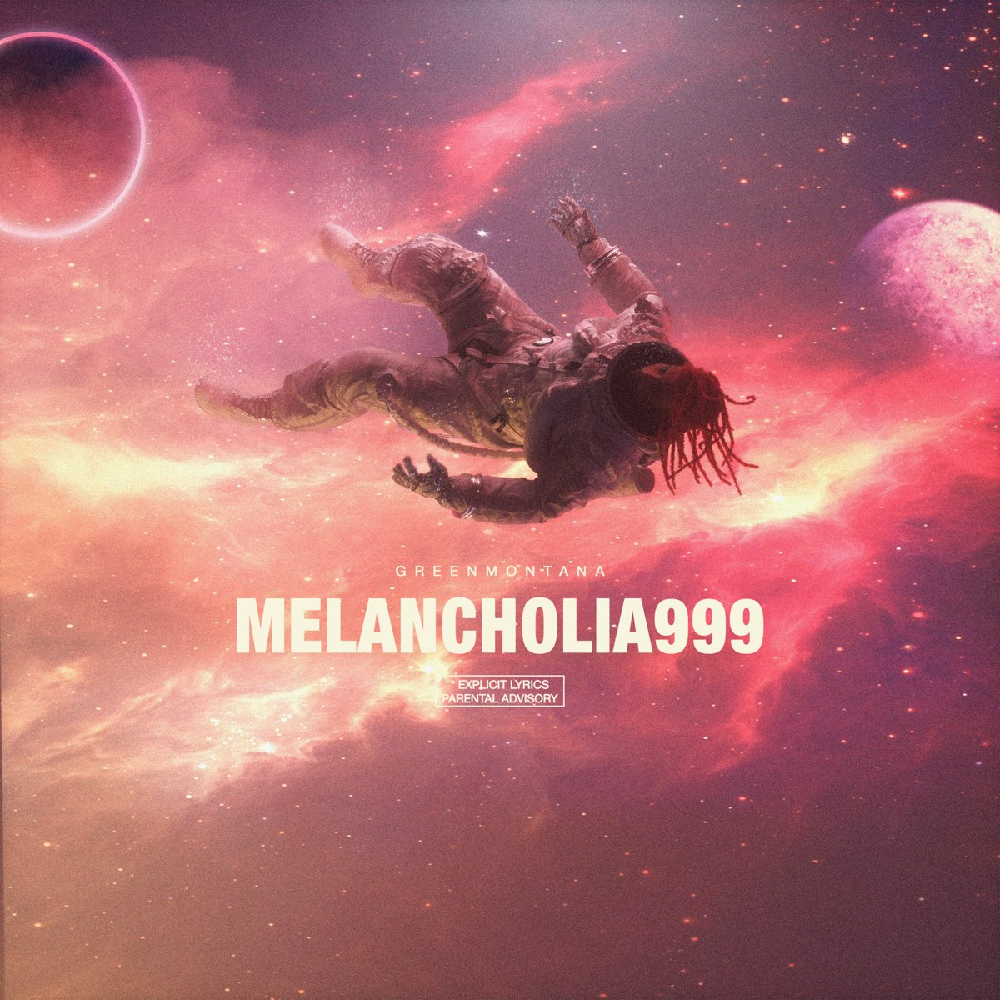
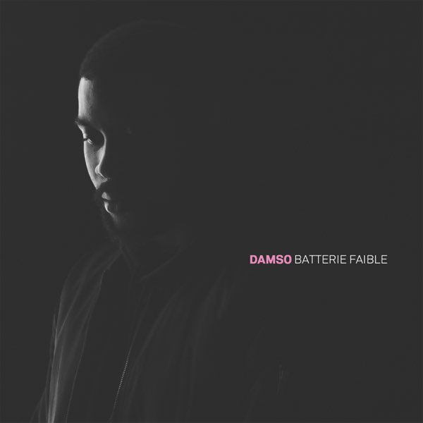
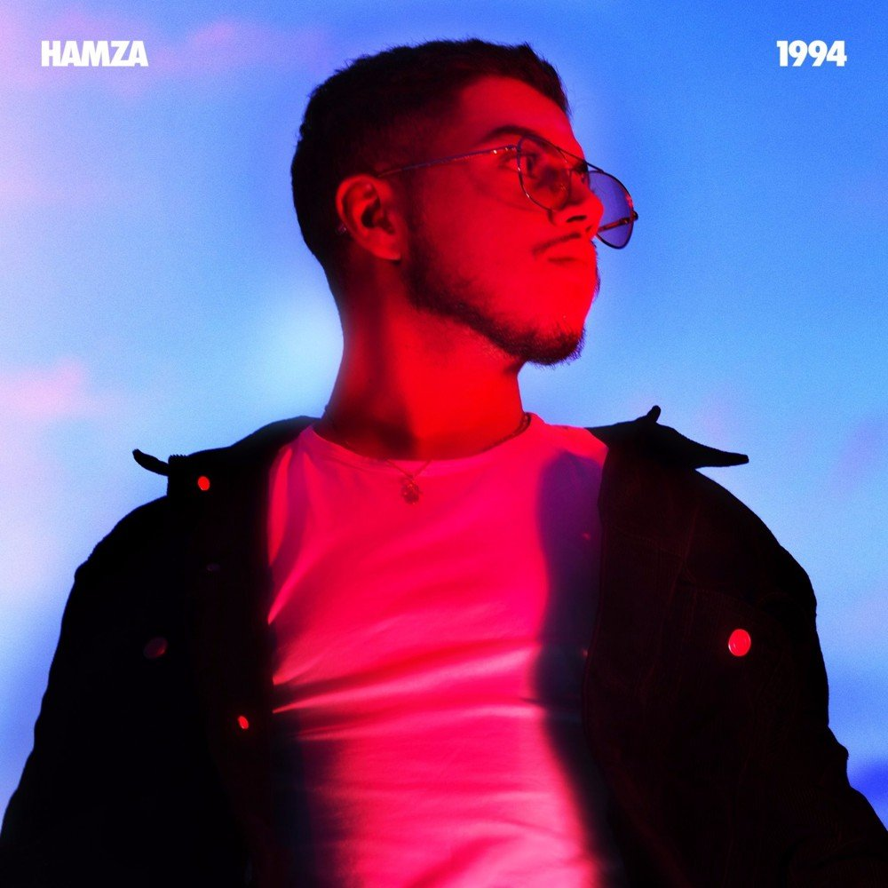
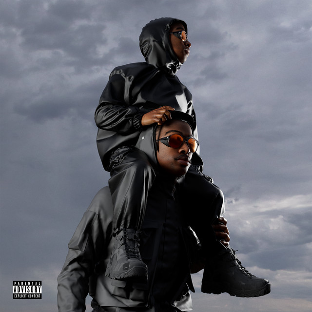
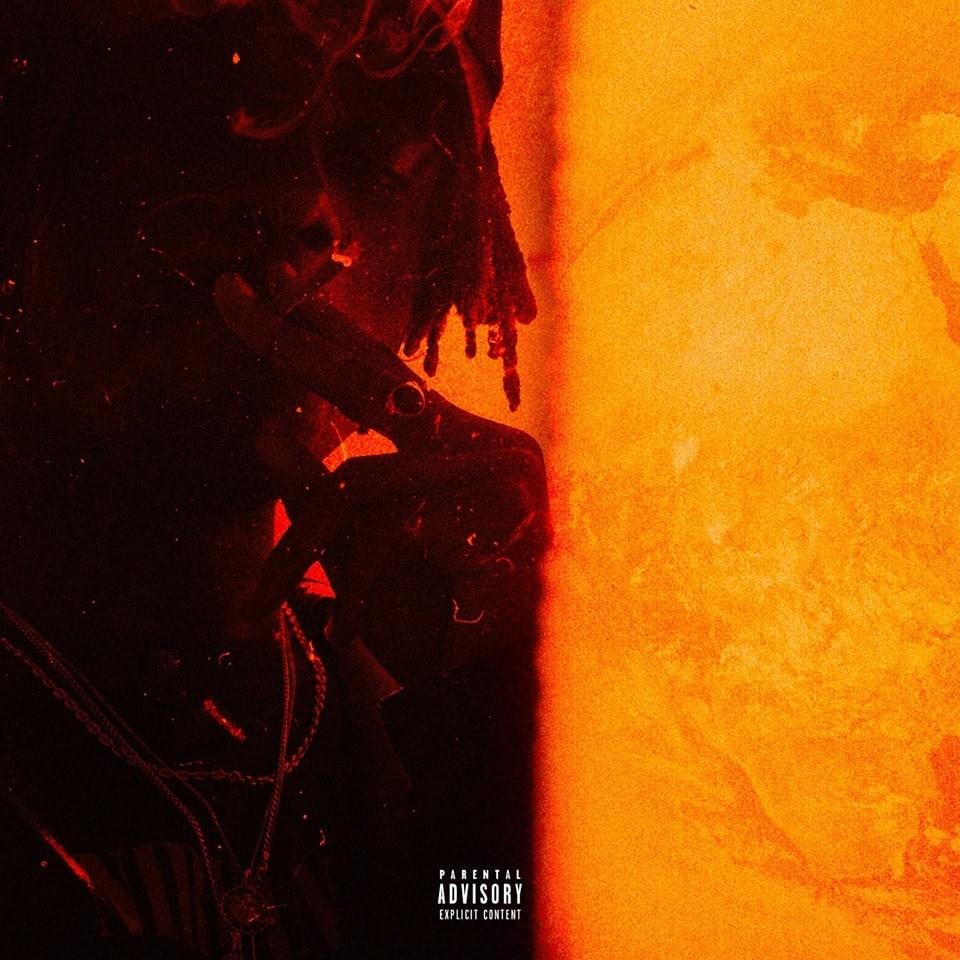

21 mai 2021
Mélodie et textes, le rappeur allie les deux et produit des sons aux ambiances singulières. Son prochain projet intitulé Melancholia 999 sortira le 21 mai. Le Belge a révélé un titre intitulé « Tomber pour elle » lors du Planète Rap de SDM.
Hip-hop/Rap
Melancholia999
Green Montona

Hip-hop/Rap
Hip-hop/Rap
Batterie Faible
Damso
8 Juillet 2016
Batterie faible est le premier album studio du rappeur belge Damso, sorti le 8 juillet 2016 sous le label Capitol Music France. Ce premier projet de 12 pistes et 2 bonus lui permet de se faire connaitre du public rap et se faire un nom. damso
Batterie Faible
Damso

27 octobre 2017
Jouant à volonté avec les codes de la trap et du son West Coast, Hamza s’affirme avec une cinquième mixtape à l’atmosphère urbaine et hypnotique. Avec un flow détendu et imprégné d’influences R&B, le rappeur belge profère un rap cru et confessionnel baigné de spleen.
Hip-hop/Rap
1995
Hamza

17 Decembre 2021
La tape elle s’appelle comme un vomi “. ERRR, c’est un La Fève qui recrache, étale son talent et ses influences musicales. Des influences qu’on ressent notamment avec le choix des prods. 19 beatmakers ont travaillé à créer les sonorités de ERRR.
Hip-hop/Rap
ERRR
La Féve

Hip-hop/Rap
Certified Lover Boy
Drake

14 Septembre 2018
ses trois projets précédents avaient déjà positionné Josman comme un cas à part au sein du hip-hop francophone. Connu pour sa technique aiguisée, la richesse de son vocabulaire et son goût pour le multisyllabique, il se distingue aussi par une personnalité décalée.
Hip-hop/Rap
J.O.$
Josman